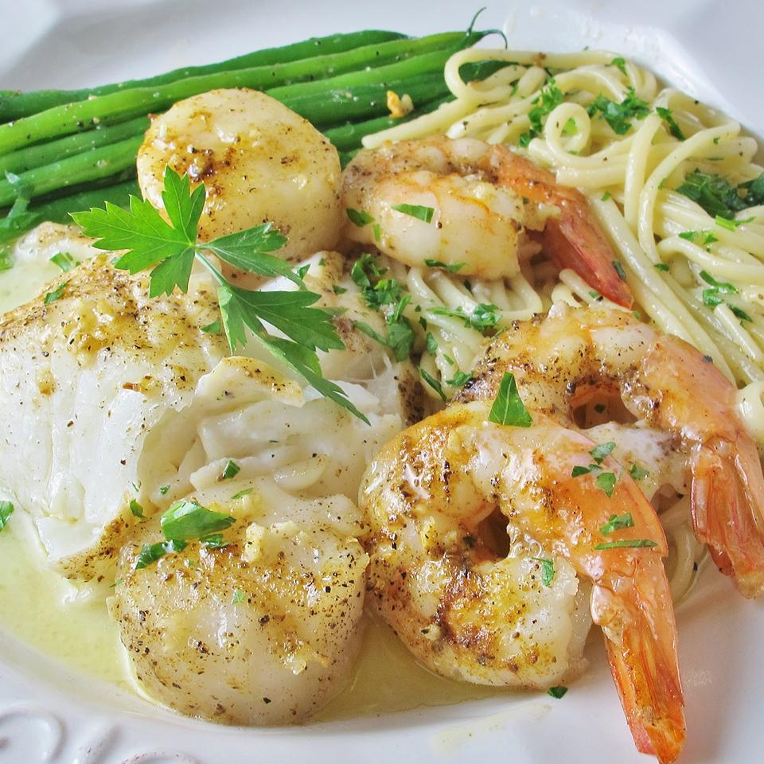

Seafood Bake For Two

Delicious seafood dish for date night
Quick and easy seafood bake for two is perfect for a romantic evening
Great with linguini and a glass of white wine
Add a few dashes of old bay seasoning for perfect flavoring
Ingredients
- 2 (4 ounce) halibut fillets
- 6 scallops
- 6 peeled and deveined jumbo shrimp, tail still attached
- ⅓ cup dry white wine
- 2 tablespoons melted butter
- 1 tablespoon lemon juice
- ½ teaspoon seafood seasoning, such as Old Bay™
- 1 teaspoon minced garlic
- Salt and pepper to taste
- 1 tablespoon chopped fresh parsley
Steps
- Step 1: Preheat oven to 450 degrees F (230 degrees C).
- Step 2: Arrange the halibut, scallops, and shrimp in an oven-safe, glass baking dish. Drizzle with wine, butter, and lemon juice. Sprinkle with the seasoning and garlic. Season to taste with salt and pepper.
- Step 3: Bake in preheated oven until the halibut has turned white, and is flaky, 10 to 12 minutes. Sprinkle with parsley just before serving.